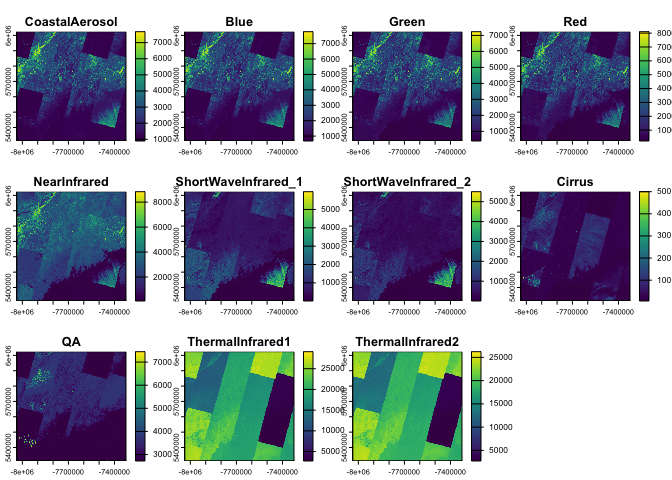

arcgislayers is the core data access package in the R-ArcGIS Bridge, providing a unified interface for working with ArcGIS data services. As part of the arcgis metapackage, it enables seamless integration between R and the ArcGIS Web GIS ecosystem, including ArcGIS Online, Enterprise, and Location Platform.
Capabilities
-
Connect to any ArcGIS Data Service: Access feature services, imagery, and portal items from ArcGIS Online, Enterprise and Location Platform using familiar R objects from
sfandterra. - Publish your R objects: Turn analysis outputs into live ArcGIS services that others can access, visualize, modify, and use in their workflows.
- Modify data in place: Maintain your production datasets—update, add, or delete features in feature services directly from R.
- Attachments: query, download, and update attachments in feature services created by Survey123.
Installation
arcgislayers is part of the arcgis metapackage, which provides the complete R-ArcGIS Bridge toolkit. For most users, installing the metapackage is recommended:
install.packages("arcgis")You can also install arcgislayers individually from CRAN:
install.packages("arcgislayers")To install the development version:
pak::pak("r-arcgis/arcgislayers")Usage
The basic workflow is: connect ➡️ query ➡️ analyze ➡️ publish. Here’s how to get started:
Connect to ArcGIS Data Services
arc_open() connects to any ArcGIS data service using its URL or item ID. This creates a connection to the remote data without downloading anything yet.
# Connect to a feature service
furl <- "https://services.arcgis.com/P3ePLMYs2RVChkJx/ArcGIS/rest/services/USA_Counties_Generalized_Boundaries/FeatureServer/0"
county_fl <- arc_open(furl)
county_fl
#> <FeatureLayer>
#> Name: USA Counties - Generalized
#> Geometry Type: esriGeometryPolygon
#> CRS: 4326
#> Capabilities: Query,ExtractQuery Data
arc_select() brings data from ArcGIS into R as familiar sf objects. You can get everything, or be selective:
# Get all data (use with caution on large datasets!)
counties_all <- arc_select(county_fl)
# Get specific columns and rows
large_counties <- arc_select(
county_fl,
fields = c("state_abbr", "population"),
where = "population > 1000000"
)
large_counties
#> Simple feature collection with 49 features and 2 fields
#> Geometry type: POLYGON
#> Dimension: XY
#> Bounding box: xmin: -158.2674 ymin: 21.24986 xmax: -71.02671 ymax: 47.77552
#> Geodetic CRS: WGS 84
#> First 10 features:
#> STATE_ABBR POPULATION geometry
#> 1 OH 1264817 POLYGON ((-81.37707 41.3463...
#> 2 OH 1323807 POLYGON ((-83.24282 39.8044...
#> 3 PA 1250578 POLYGON ((-79.86399 40.2007...
#> 4 PA 1603797 POLYGON ((-75.1429 39.8816,...
#> 5 HI 1016508 POLYGON ((-157.6733 21.2980...
#> 6 IL 5275541 POLYGON ((-88.26711 41.9887...
#> 7 AZ 4420568 POLYGON ((-111.0425 33.4759...
#> 8 AZ 1043433 POLYGON ((-110.4522 31.7360...
#> 9 CA 1682353 POLYGON ((-121.4721 37.4777...
#> 10 CA 1165927 POLYGON ((-122.3076 37.8917...Spatial and Attribute Filtering
Filter by location or attributes before bringing data into R:
# Spatial filter: get counties that intersect with North Carolina
nc <- sf::st_read(system.file("shape/nc.shp", package="sf"))
#> Reading layer `nc' from data source
#> `/Users/josiahparry/Library/R/arm64/4.5/library/sf/shape/nc.shp'
#> using driver `ESRI Shapefile'
#> Simple feature collection with 100 features and 14 fields
#> Geometry type: MULTIPOLYGON
#> Dimension: XY
#> Bounding box: xmin: -84.32385 ymin: 33.88199 xmax: -75.45698 ymax: 36.58965
#> Geodetic CRS: NAD27
nc_area_counties <- arc_select(
county_fl,
filter_geom = sf::st_bbox(nc[1,])
)
nc_area_counties
#> Simple feature collection with 6 features and 12 fields
#> Geometry type: POLYGON
#> Dimension: XY
#> Bounding box: xmin: -82.0477 ymin: 35.98946 xmax: -80.83795 ymax: 36.80746
#> Geodetic CRS: WGS 84
#> OBJECTID NAME STATE_NAME STATE_FIPS FIPS SQMI POPULATION
#> 1 467 Johnson County Tennessee 47 47091 302.6644 17948
#> 2 1924 Alleghany County North Carolina 37 37005 236.1822 10888
#> 3 1926 Ashe County North Carolina 37 37009 429.3538 26577
#> 4 2016 Watauga County North Carolina 37 37189 313.3604 54086
#> 5 2018 Wilkes County North Carolina 37 37193 756.5252 65969
#> 6 2995 Grayson County Virginia 51 51077 445.7267 15333
#> POP_SQMI STATE_ABBR COUNTY_FIPS Shape__Area Shape__Length
#> 1 59.3 TN 091 0.07960385 1.290607
#> 2 46.1 NC 005 0.06140165 1.231232
#> 3 61.9 NC 009 0.11428581 1.442112
#> 4 172.6 NC 189 0.08142272 1.287674
#> 5 87.2 NC 193 0.19911944 1.984232
#> 6 34.4 VA 077 0.11578917 1.945424
#> geometry
#> 1 POLYGON ((-81.74091 36.3919...
#> 2 POLYGON ((-81.2397 36.36549...
#> 3 POLYGON ((-81.47258 36.2344...
#> 4 POLYGON ((-81.80605 36.1046...
#> 5 POLYGON ((-81.02037 36.0350...
#> 6 POLYGON ((-81.34512 36.5729...Use list_fields() to explore available attributes:
list_fields(county_fl)
#> # A data frame: 12 × 10
#> name type alias sqlType nullable editable domain defaultValue length description
#> * <chr> <chr> <chr> <chr> <lgl> <lgl> <lgl> <lgl> <int> <chr>
#> 1 OBJE… esri… OBJE… sqlTyp… FALSE FALSE NA NA NA <NA>
#> 2 NAME esri… Name sqlTyp… TRUE TRUE NA NA 50 "{\"value\…
#> 3 STAT… esri… Stat… sqlTyp… TRUE TRUE NA NA 20 "{\"value\…
#> 4 STAT… esri… Stat… sqlTyp… TRUE TRUE NA NA 2 "{\"value\…
#> 5 FIPS esri… FIPS sqlTyp… TRUE TRUE NA NA 5 "{\"value\…
#> 6 SQMI esri… Area… sqlTyp… TRUE TRUE NA NA NA "{\"value\…
#> 7 POPU… esri… 2020… sqlTyp… TRUE TRUE NA NA NA "{\"value\…
#> 8 POP_… esri… Peop… sqlTyp… TRUE TRUE NA NA NA "{\"value\…
#> 9 STAT… esri… Stat… sqlTyp… TRUE TRUE NA NA 2 "{\"value\…
#> 10 COUN… esri… Coun… sqlTyp… TRUE TRUE NA NA 3 "{\"value\…
#> 11 Shap… esri… Shap… sqlTyp… TRUE FALSE NA NA NA <NA>
#> 12 Shap… esri… Shap… sqlTyp… TRUE FALSE NA NA NA <NA>Work with Imagery
arc_raster() extracts raster data from ArcGIS ImageServers as terra objects:
# Connect to Landsat imagery
img_url <- "https://landsat2.arcgis.com/arcgis/rest/services/Landsat/MS/ImageServer"
landsat <- arc_open(img_url)
# Extract imagery for a specific area
res <- arc_raster(
landsat,
xmin = -71,
ymin = 43,
xmax = -67,
ymax = 47.5,
bbox_crs = 4326,
width = 500,
height = 500
)
terra::plot(res)
Publish Your Results
Turn your R analysis into ArcGIS services that others can access:
# Publish an sf object as a feature service (requires authentication)
my_analysis <- large_counties |>
dplyr::mutate(density_category = ifelse(pop_sqmi > 100, "Dense", "Sparse"))
publish_layer(
my_analysis,
title = "County Population Density Analysis",
description = "Counties categorized by population density"
)Learn more
To learn more about about how to most effectively use arcgislayers for your use case review the developer site documentation.